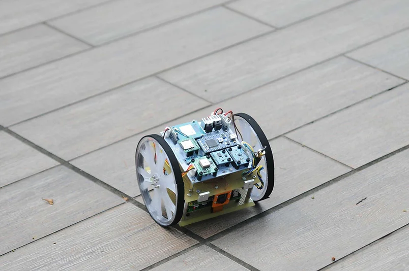

cansat project
カンサットとは、一定のレギュレーションに則った超小型の人工衛星模擬モデルです。宇宙空間に打ち上げられる衛星と同様の機能、すなわちマイコン、センサ、通信系、アクチュエータを持ちます。 開発したカンサットは気球やドローン、ロケットを用いて投下し定められたミッションを行い、データを取得します。カンサットの開発によって機械加工、回路設計からプロジェクトマネジメントまでものづくりの基礎を学ぶことができます。 F.T.E.ではハイブリッドロケットの開発に比較し自由度が高いカンサットの開発によって、部員の技術力の向上が見られています。日本国内ではカンサットの共同実験として能代宇宙イベントと種子島ロケットコンテストがあげられ、F.T.E.は2016年度から前者に参加しています。能代宇宙イベントのカンサット競技には「ランバック」「フライバック」「ミッション」の3部門があり、2017年度は3部門全てに参加しました。
Kazami-ランバック部門出場
2022年の伊豆大島共同打ち上げ実験に向けて12期代が作成した機体。超音波センサによるゴール検知を目指す。ゴールからの距離は17cm。12期代の技術力を高めることができた。
Visionary -ランバック部門
ミッションステートメントは「確実に走行を開始できる自立型ローバーを開発し、団体内の技術確立を目指す」。今後の缶サット開発がより円滑・効率的に進められるように、缶サットの要素技術の取得とプロジェクトマネジメント手法を検討・確立したうえで、4年目以降の缶サット開発の指針とすることを意図して開発した。機体名Visionaryは,その理念に基づき決定された。結果は、2回の投下とも、落下時に破損し走行不能でリタイア.。
Penguins-ミッション部門
2機の四脚歩行型Cansatをほとんどのパーツを3Dプリンターで製作し、移動対象物を2機で協力して運ぶというミッションに挑戦。機体は投下されるとそれぞれパラシュートで減速降下して着地後にたたまれていた脚を展開し、パラシュートを切り離す。その後、9軸センサと画像認識を用いて移動対象物まで移動し、2つの機体で移動対象物を左右から挟み込んで新たな目標地点まで運ぶ。結果は、2機ともパラシュートが無事開傘して無事に減速降下したものの、着地の衝撃で片方の機体は脚のパーツのサーボモータが破損し、もう一方の機体は落下の衝撃でソフトウェアリセットがかかり、結果的に2機とも着地した地点から動くことができなかった。
Contact
メールにてお気軽にお問い合わせください。